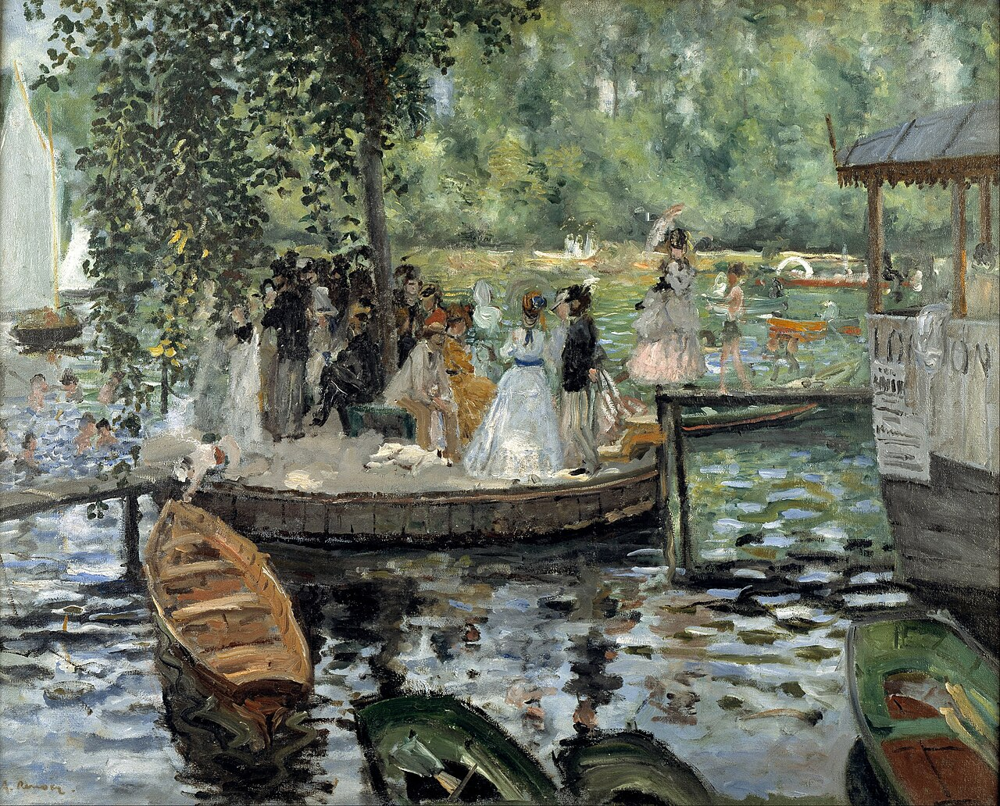
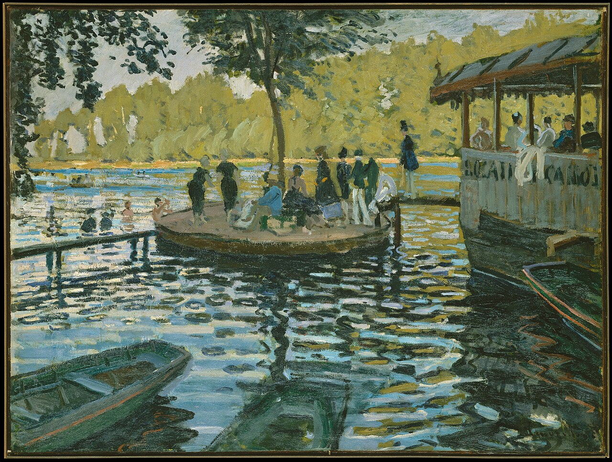

1869년 여름, 두 화가가 센 강변에서 물 위의 반짝임을 그렸다. 일렁이는 수면은 물결이 겹친 결과다. 용수철 펄스에서 이중 슬릿까지, 겹침의 규칙 하나로 따라가 본다.


위: 르누아르, 아래: 모네 〈라 그르누예르〉(1869) · 퍼블릭 도메인(모네 작품 사진은 CC0, 메트로폴리탄 미술관 소장)
르누아르 — 사람과 분위기에 무게
모네 — 물과 빛의 움직임에 무게
1869년 여름, 파리 근교 센 강변의 수상 유원지 라 그르누예르(‘개구리 연못’)에서 두 화가가 같은 풍경을 그렸다. 인상주의가 시작된 장면으로 자주 소개된다.
관찰 질문 ① 반짝이는 곳은 어디에 몰려 있나? ② 수면은 가만히 있을까, 흔들리고 있을까? ③ 두 화가는 ‘움직이는 빛’을 어떤 붓질로 표현했나?
수면이 저렇게 일렁이는 까닭은 여러 물결이 겹쳐 높이가 순간순간 바뀌기 때문이다. 오늘은 ‘겹침’의 규칙을 찾는다.
빛의 중첩과 간섭을 통해 빛의 파동성을 알고, 이를 이용한 기술과 현상을 예를 들어 설명할 수 있다.
빛이 중첩·간섭·굴절하고 물질과 상호작용하는 성질은 광학 기기, 정밀 측정, 영상 장치 등에 활용된다.
| 쪽 | 내용 | 이 덱 |
|---|---|---|
| 124 | 용수철 두 파동 중첩 관찰 | ④⑤⑥ |
| 125 | 중첩 원리·독립성·보강/상쇄 | ⑦⑧ |
| 126 | 이중 슬릿 탐구(레이저) | ⑪⑬ |
| 127 | 영의 실험·경로차·간격 비례 | ⑫⑬ |
| 128~129 | 간섭의 활용(2차시) | 2차시 덱 |
① 중학교 ‘파동의 발생과 전달’의 진폭·진동수·파형을 상기시키고, 사전 질문으로 학습 정도를 파악한다.
② 파동의 중첩은 동영상보다 직접 실험으로, 빛의 간섭도 실험으로 간섭무늬에 영향을 주는 요인을 찾게 한다. 중첩 순간이 매우 짧으니 주의 깊게 관찰(스마트폰 슬로모션).
③ 이중 슬릿 실험에서는 밝은 무늬 사이 간격(Δx)을 정확히 측정해야 관계를 찾을 수 있음을 안내한다.
④ 간섭 활용 사례는 교과서에 나온 것을 제외하고 조사해 학생이 설명하게 한다(2차시).
[지식] 중첩 시 합성파의 모양을 설명 [탐구] 합성파 관찰·간섭무늬 요인 찾기, 간격 정확 측정 [가치·태도] 협력.
※ 성취기준·유의점은 교사용 교과서에 실린 문구다. 교육과정 고시 원문과는 대조하지 않았다.
매질의 진동 방향 ⟂ 파동의 진행 방향
줄·용수철을 위아래로 흔들기, 빛(전자기파)
매질의 진동 방향 ∥ 파동의 진행 방향
용수철을 밀었다 당기기, 소리(공기의 밀·소)
공통: 가는 것은 에너지와 모양. 빨간 점은 제자리 진동뿐.
① 두 파동이 만나면 — 각 점의 변위를 더한다
y = y1 + y2
② 보강 간섭 — 위상이 같다(마루+마루)
A = A1 + A2
③ 상쇄 간섭 — 위상이 반대(마루+골)
A = |A1 - A2|
④ 지나간 뒤에는 — 각 파동은 원래 모양·속도 그대로(독립성)
예) 진폭 20 cm, 30 cm가 상쇄 → 30 − 20 = 10 cm (교과서 125쪽). 진폭이 같으면 0.
‘보강·상쇄’는 합성파의 크기를 뜻한다. 열쇠는 위상이 같은지 반대인지이며, 빛에서는 이 열쇠가 경로차로 바뀐다(⑫).
파동 방정식이 선형이라 두 해의 합도 해다. 진폭이 아주 크거나 비선형 매질(충격파)에서는 깨진다.
∂2 y∂ t2=v2∂2 y∂ x2
| 입자(공) | 파동(펄스) | |
|---|---|---|
| 같은 자리 | 동시에 못 차지 | 겹쳐서 합 |
| 만난 뒤 | 방향·속도 변화 | 그대로 통과 |
| 대표 현상 | 충돌 | 간섭·회절 |
그래서 빛이 간섭무늬를 만든다면 빛은 (공이 아니라) 파동처럼 행동한다. 영(1803)의 이중 슬릿 실험이 그 증거다.
화면을 눌러 점 P를 옮겨 보세요.
일렁이는 수면은 이렇게 퍼진 물결들이 겹친 모습. 결과는 경로차가 파장의 몇 배인가로 정해진다.
오른쪽에서 영상을 고르면 이 자리에 나옵니다
① 만나는 동안과 지난 뒤의 모양 ② 보강·상쇄가 일어나는 조건 ③ 우리 시뮬레이션과 같은 점·다른 점
빛이 지나가는 아주 좁은 틈. 틈이 두 개면 이중 슬릿이다.
d = 슬릿 간격 두 틈 사이의 거리 → 줄무늬의 간격 Δy = λL/d
a = 슬릿 폭 틈 하나의 너비 → 무늬 전체의 퍼짐과 밝기 곡선
시뮬레이션에서 ‘슬릿 폭 반영’을 켜고 a를 바꿔 보자. d를 바꾸면 무엇이, a를 바꾸면 무엇이 변하는가?
영의 장치(교과서 그림 Ⅲ-3): 입사광 → 단일 슬릿 → 이중 슬릿 → 스크린. 단일 슬릿은 두 슬릿에 같은 위상의 빛이 가도록 한다(★ 결맞음). 오늘날에는 레이저로 대신한다.
스크린이 아주 멀면 두 광선은 거의 평행하다. S₂에서 광선에 수직인 선(점선)을 그으면 직각삼각형이 생기고, 빗변 d에서 θ의 마주 변이 S₁이 더 가야 하는 길 Δ다. 금색 눈금 하나 = λ 하나.
① 두 광선의 경로차 (스크린이 멀면 평행)
Δ = d sinθ
② 밝은 줄(보강): 반파장의 짝수배
d sinθ = mλ (m = 0, 1, 2, …)
③ 어두운 줄(상쇄): 반파장의 홀수배
d sinθ = (m+12)λ
④ 각이 아주 작으면 (약 10⁻³ rad)
sinθ ≈ tanθ = yL
⑤ 밝은 줄의 위치와 간격
ym=mλ Ld, Δ y=λ Ld
⑥ 교과서 탐구 값으로 확인 (532 nm, 0.2 mm, 1 m)
Δ y=532×10-9×10.2×10-3=2.66 mm
d = 0.2 mm → 2.66 mm, d = 0.4 mm → 1.33 mm (절반). 교과서 126쪽 답안 예시와 일치한다.
| 바꾸는 것 | 간격 Δy | 까닭 |
|---|---|---|
| 파장 λ ↑ | 넓어짐 (비례) | 같은 mλ에 더 큰 θ |
| 슬릿 간격 d ↑ | 좁아짐 (반비례) | 작은 θ에도 d sinθ가 큼 |
| 스크린 거리 L ↑ | 넓어짐 (비례) | 같은 각, 더 먼 곳 |
교과서는 ‘λ에 비례, d에 반비례’까지, L과 식은 ★ 확장이다.
③ = ① × ②: 큰 언덕이 줄무늬의 크기를 깎는 틀이다. a↓ → 더 넓게 퍼짐(회절). d/a가 정수이면 그 차수가 사라진다.
Q1. 진폭이 각각 20 cm, 30 cm인 두 파동이 만나 상쇄 간섭을 할 때 합성파의 진폭은?
두 진폭의 차이: 30 − 20 = 10 cm (교과서 125쪽)
Q2. 이중 슬릿에서 한 점 P까지 경로차가 1.5λ이다. P는 밝을까, 어두울까? 까닭도 쓰시오.
경로차가 반파장의 홀수배(3λ/2)이므로 두 빛이 반대 위상으로 만나 상쇄 간섭 → 어둡다.
Q3. 파장 532 nm 빛, d = 0.25 mm, L = 2 m일 때 밝은 줄 사이 간격은?
Δy = λL/d = (532×10⁻⁹ × 2) / (0.25×10⁻³) = 4.26×10⁻³ m ≈ 4.3 mm
Q4. 빨간 레이저로 바꾸면 줄무늬 간격은 어떻게 되고, 그 까닭은?
파장이 길어지므로 간격이 넓어진다. 같은 경로차 조건(mλ)을 만들려면 더 큰 각이 필요하기 때문(Δy ∝ λ).
Q5. ★ 슬릿 폭 a만 절반으로 줄이면 무늬는 어떻게 변할까?
줄무늬 간격은 그대로이고, 무늬가 퍼지는 범위(바깥 곡선의 폭)가 약 2배로 넓어진다. 회절 첫 극소 위치가 λL/a이기 때문.
Q6. 공 두 개와 펄스 두 개가 정면으로 만날 때 만난 뒤의 모습을 비교해 쓰시오.
공은 충돌해 방향·속도가 바뀌지만, 펄스는 겹쳤다가 원래 모양·방향으로 서로를 통과한다(독립성).
① 파동은 만나면 y = y₁ + y₂로 겹치고, 지나가면 원래대로
② 위상이 같으면 보강, 반대이면 상쇄
③ 입자는 만나면 부딪치지만 파동은 통과 → 빛의 간섭 = 빛의 파동성
④ 이중 슬릿: 경로차 d sinθ가 mλ이면 밝고 (m+½)λ이면 어둡다
⑤ 줄무늬 간격 Δy = λL/d, ★ 슬릿 폭 a는 무늬의 틀(회절)
모네와 르누아르가 그린 수면의 일렁임도 여러 물결이 겹친 것이다. 겹침의 규칙을 알고 나서 다시 보면 그림이 어떻게 달라 보이는가?
• 비눗방울·기름막의 색, 안경 렌즈 코팅 (얇은 막)
• 렌즈·반도체 웨이퍼의 평탄도 검사, 중력파 검출 (간섭계)
• 소음 제거 헤드폰, 5G·레이더 빔 (위상 맞추기)
• 대학·학과와의 연결, 인문·예술과의 연결
교과서 128쪽 조사 활동: 교과서에 나오지 않은 간섭 사례 1개와 그 원리 한 줄.
반성 한 줄: 오늘 가장 놀라웠던 ‘겹침’의 장면은?